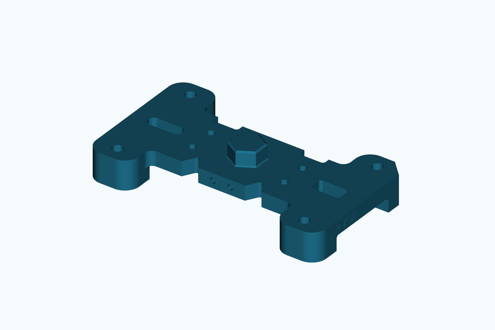
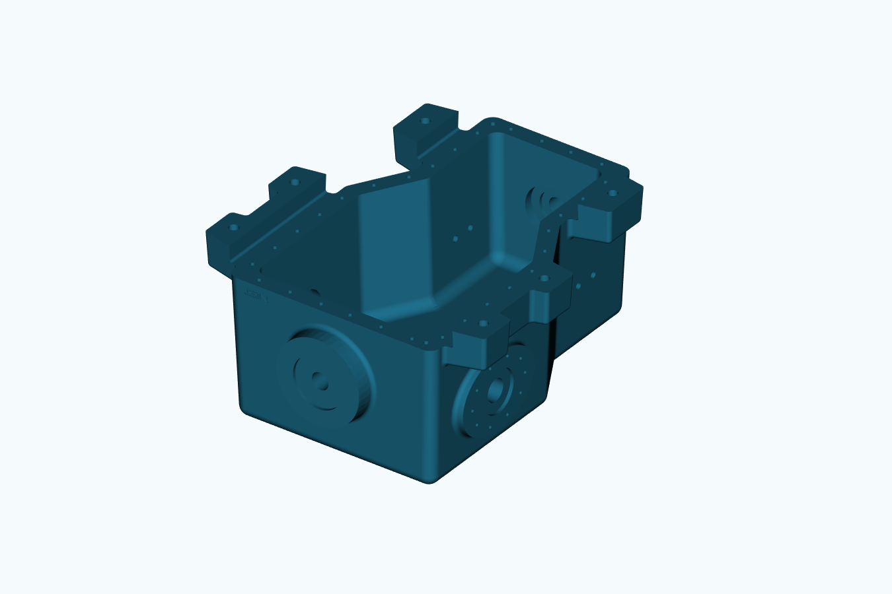
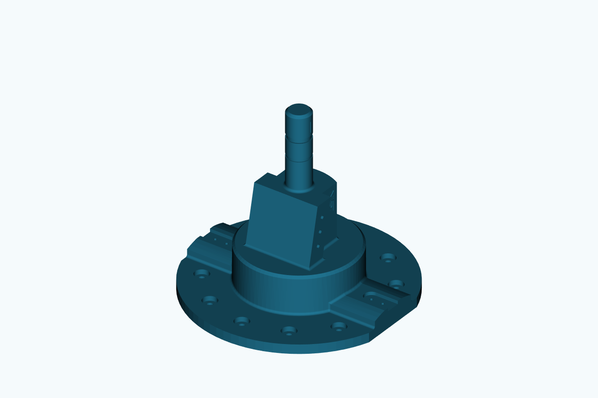

Gerçekte ne yapıldı?
| Parça | İşlem | Ölçülmüş sonuç |
|---|
| CTC01 | Ölçülen analitik skeçlerden taban/ayaklar, kök radyüsleri, altıgen çıkıntı/pah, çapraz kör delikler ve işaret cepleri yeniden oluşturuldu. | Geçerli tek katı. Referans hacim farkı 0.405 ppm; 510 köşe örneğinde karşı yüzeye en büyük uzaklık 1.22e-06 mm. Çıkıntı 50→55 mm değişimi beklenen hacmi verdi. |
| CTC02 | Kaynak karmaşık gövdeye iki delik ekseniyle dört duvar açıklığı; çap 16 mm. | Çap/eksen ve yeni malzeme kaldırma kontrolleri geçti. Kontrollü hacim farkının analitik değerden sapması 2.123 ppm. |
| CTC05 | Kaynak flanşlı mile iki çevresel kanal ve 6×3×30 mm kama yuvası eklendi. | Kanal kök radyüsleri 29,75/28,75 mm, konumlar ve yuva tabanı geri ölçüldü. Hacim farkı sapması 5.530 ppm. Değiştirilmemiş kaynak bu özellik kontrolünü geçmedi. |
CTC01 ölçülü kaynak CAD yardımıyla yeniden kuruldu; yalnız PDF'den kör modelleme sınaması değildir. CTC02/05 kaynak model üzerinde değişikliktir; özgün gövde ve milin tamamını yeni çizdiğimizi iddia etmiyoruz. Bu turdaki modellemeyi Codex ve CAD çekirdekleri yaptı; sonuçlar küçük yerel CAD modelinin başarısı sayılmaz.

CTC01: gerçek yeniden üretilmiş STEP.
CTC02: değiştirilmiş gerçek gövde.
CTC05: kanallar ve kama yuvası.FreeCAD'de gerçekten çalışıyor mu?
Üç dosya yerel FreeCAD 1.1.4 içinde açıldı, kaydedildi ve yeniden açıldı. Gövde/mil değişiklikleri yerel Cylinder/Box/Cut özellikleridir. Gövde delik yarıçapı 8→9 mm ve mil kanal kökü 29,75→29,25 mm değiştirildi; yeniden hesaplanan hacim değişimleri analitik hesapla belirlenmiş toleransta uyuştu, sonra nominal değerlere dönüldü. Görünüm kaydı yalnız son katıyı gösterir; uzun kesici araçlar gizlendi.
FreeCAD ve CadQuery aynı OCCT ailesini kullandığından bunlar bütünüyle bağımsız iki geometri yöntemi değildir. Analitik hacim ve ölçü kontrolleri ayrıca kullanıldı. STEP/SVG görünümleri üretildi; SVG'ler tam ölçülendirilmiş/GD&T onaylı imalat resmi değildir.
CTC01 FreeCAD · CTC02 düzenlenebilir FreeCAD · CTC05 düzenlenebilir FreeCAD
CTC01 STEP · CTC02 STEP · CTC05 STEP · CTC01 üst görünüş
İlk ölçüm neden reddedildi?
Gövdenin 40 mm cidarı yüzeye normal ölçüldüğünden, 2° eğimli duvarı X doğrultusunda delen deliğin malzeme uzunluğu 80/cos(2°) olur. Ayrıca hiç değiştirilmeden STEP'e yazılıp tekrar okunan kaynakta hacim integrali 289.851mm³ değişti; kontrol edilen köşelerin karşı yüzeye uzaklığı 5e-13mm idi. İlk ham farkı doğru sonuç diye kabul etmedik. Aynı yazma/okuma kontrolüyle eşlenmiş taban değerini kullandık; ham fark ve ilk başarısız denemeler de saklandı. Bu kontrol, parçanın her yüzeyinde sınırsız hassasiyet veya imalat güvencesi değildir.
CTC01 ölçümleri · Gövde delik/hacim kontrolü · Mil kanal/yuvanın kontrolü · Gerçek native FreeCAD testleri · Açılmış CAD görünüm denetimi
Kaynak ve kapsam
NIST MBE PMI test modelleri ve kaynak tanım paketleri kullanıldı; NIST'e teşekkür edilir. PMI/GD&T örnekleri en iyi imalat uygulaması olarak sunulmuyor. Kaynak resimler: CTC01, CTC02, CTC05. Ölçüsüz öğeler kaynak modelden alındı; yeni eklenen delik/kanal ölçüleri bu testin gereksinimleridir.
CTC03/04 ve FTC paketi bu turda yeniden modellenmedi. Genel teknik resim anlama oranı, imalata uygunluk, yorulma/dayanım veya gerçek İHA tasarımı kabulü çıkarılmaz.